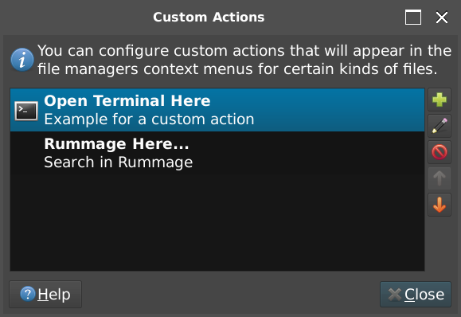
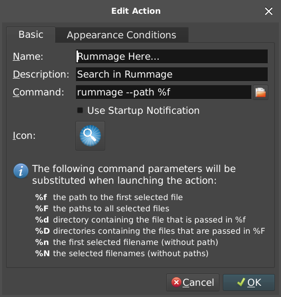
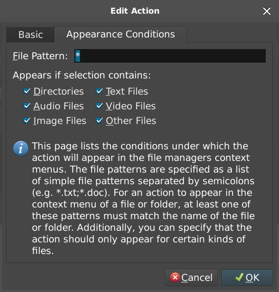

Extras
File Manager Context Menu
macOS
- Open Automator.
- Create new Service.
-
Set the following:
- Service receives selected
files or foldersinany Application. - Shell:
/bin/sh. - Pass input:
as arguments. -
Content of script:
(/Library/Frameworks/Python.framework/Versions/3.6/bin/rummage --path "$1")>/dev/null 2>&1 &
This is just an example. You will need to determine the location of your Python install.
- Service receives selected
-
Save to
/Users/<username>/Library/Services/Rummage Here....
Windows
-
Create a file
rummage.regwith the content from one of the entries below. Replace<python_install_path>with the actual path to your Python directory (usually something like:c:\Python35). Remember to escape backslashes appropriately. Also note that we quote%1to allow spaces in the command line argument. Paths may vary, and it is left up to the user to discover where their Python install directory is.Warning
This isn't a guide in how to do registry editing proper, so only edit the registry if you are certain of what you are doing.
Windows Registry Editor Version 5.00 [HKEY_CLASSES_ROOT\Folder\shell\Rummage Here...] @="" [HKEY_CLASSES_ROOT\Folder\shell\Rummage Here...\command] @="<python_install_path>\\Scripts\\rummage.exe --path \"%1\"" [HKEY_CLASSES_ROOT\*\shell\Rummage Here...] @="" [HKEY_CLASSES_ROOT\*\shell\Rummage Here...\command] @="<python_install_path>\\Scripts\\rummage.exe --path \"%1\""
Optionally, you can also include the Rummage icon beside your context menu entry by adding a few additional lines:
Windows Registry Editor Version 5.00 [HKEY_CLASSES_ROOT\Folder\shell\Rummage Here...] @="" "Icon"="<python_install_path>\\Lib\\site-packages\\rummage\\lib\\gui\\data\\rummage.ico" [HKEY_CLASSES_ROOT\Folder\shell\Rummage Here...\command] @="<python_install_path>\\Scripts\\rummage.exe --path \"%1\"" [HKEY_CLASSES_ROOT\*\shell\Rummage Here...] @="" "Icon"="<python_install_path>\\Lib\\site-packages\\rummage\\lib\\gui\\data\\rummage.ico" [HKEY_CLASSES_ROOT\*\shell\Rummage Here...\command] @="<python_install_path>\\Scripts\\rummage.exe --path \"%1\""
-
Save file.
- Double click the registry file to add the context menu into Windows Explorer.
Linux
There are many different flavors of Linux using different file managers. This makes it difficult to give a guide to cover all cases. Please research about your specific distro's file manager and how to add context menus. If you would like to include the info here, please issue a pull request to update the documentation.
Ubuntu Nautilus (Gnome)
Paths might vary depending on Ubuntu version etc.
-
Create an executable file called
Rummage Here...in~/.local/share/nautilus/scripts/with the following content (RUMMAGE_PATH should be the binary created when installing rummage in Python which is usually/usr/local/bin/rummage).#!/usr/bin/python import os import subprocess RUMMAGE_PATH = "/usr/local/bin/rummage" selected_paths = os.environ.get("NAUTILUS_SCRIPT_SELECTED_FILE_PATHS", None) if selected_paths is not None: paths = selected_paths.split("\n") if len(paths): subprocess.Popen([RUMMAGE_PATH, "--path", paths[0]])
-
Restart of Nautilus may or may not be needed, but context menu item should appear under
Scriptsand should work on files and folders.
Ubuntu Dolphin (KDE)
At the time of writing, this was tested on KDE 5, so most of the commands are appended with '5'.
-
To discover where you can store your context menu entries, run the following command:
facelessuser@facelessuser:~$ kf5-config --path services /home/facelessuser/.local/share/kservices5/:/usr/share/kservices5/
-
Next create your
.desktopfile in one of these locations creating the necessary folder(s) if needed. In this example, the file will be created at~/.local/share/kservices5/ServiceMenus/rummage.desktoop. -
Provide the necessary configuration to specify the entry type, file targets, command to execute, icon, etc. In our case, we specify
all/allto target both files and folders. We also point to one of the PNG files that ship in the package for the icon.[Desktop Entry] Type=Service X-KDE-ServiceTypes=KonqPopupMenu/Plugin MimeType=all/all; Actions=rummage [Desktop Action rummage] Name=Rummage Here... Icon=/usr/local/lib/python3.5/dist-packages/rummage/lib/gui/data/rummage_hires.png Exec=rummage --path "%f"
-
Lastly we rebuild and refresh the desktop entries:
facelessuser@facelessuser:~$ kbuildsycoca5 -
Close all Dolphin windows and reopen to see your context menu item. It should be found under
Actions.
Ubuntu Thunar (XFCE4)
In Ubuntu 18.04, XFCE4 sues Thunar. Thunar has a built in way of setting custom context menu items. This may or may not apply to other distros.
In Thunar, select Edit > Configure Custom Actions.... You will be presented with the custom actions dialog.

Simply press the button with the + to create a new entry. Fill in the inputs as shown below (or modify to your preference):

Then select the Appearance Conditions tab and fill in the fields as shown below (or modify to your preference):

Afterwards, you should have a Rummage context menu on both files and directories in Thunar.
Localization
Rummage provides an i18n localization framework to allow support for displaying the UI in other locales. Currently the project only has an incomplete Russian translation (I don't speak Russian, so I can't complete it).
Translations should be compiled and included by default requiring no additional steps starting in version 3.6.0.
I only speak English, so I do not maintain the translations. If the UI changes, someone from the community will need to update them appropriately via pull requests or they will remain out of date.
Editing Existing Translations
Translations are stored at rummage/lib/gui/localization/locale/<LOCALE>/LC_MESSAGES/rummage.po. Just edit the rummage.po for the appropriate <LOCALE>.
Inside each .po file there will be a msgid for each unique translatable string. Each msgid represents the actual US English text that is shown in Rummage. Underneath each msgid, you'll also find a msgstr which represents the translation for the msgid. Just edit the corresponding msgstr for each msgid in the existing rummage.po file.
msgid "About" msgstr "<my_translation>"
Generate New Template from Source
In the Python source, you'll notice that translatable strings are represented as _("some text"). _ is the function that retrieves the proper translations. In order to provide translations, we have to build up a template of all of these strings in a .pot file. This is done by running:
python setup.py extract_messages
This will scan the Python source and generate a template at rummage/lib/gui/localization/locale/rummage.pot.
If you update the source in a way that requires generating a new .pot file, then you will most likely need to update existing .po files as well. See Update Translation Files to see how.
See Babel's documentation on extract_messages for more info.
Update Translation Files
When new strings are added in the source, or strings are changed, you will need to re-generate the .pot file and then update the .po files. This should update all .po files.
python setup.py update_catalog
If you need to only update a specific .po file:
python setup.py update_catalog -l en_US
See Babel's documentation on update_catalog for more info.
Create New Translations
To create a translation .po file to edit, all you need to do is run the command below specifying your locale. The command should create a .po file to edit and the associated directory structure.
python setup.py init_catalog -l en_US
See Babel's documentation on init_catalog for more info.
Build Translations
Building translations is also pretty easy:
python setup.py compile_catalog
This should build .mo files for all languages. See Babel's documentation on compile_catalog for more info.